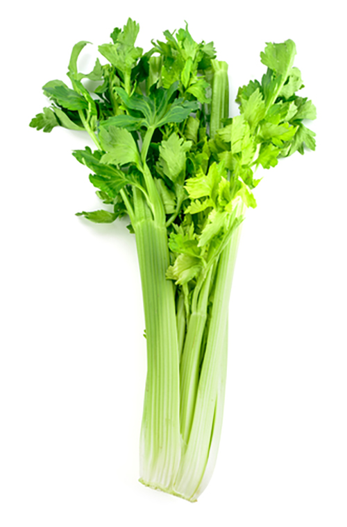

Task 1: Introduction to stocks, soups and sauces
This 'Test Your Knowledge' quiz contains 4 questions.
This 'Test Your Knowledge' quiz contains 4 questions.
Stocks, soups and sauces form the backbone of a professional kitchen. Stocks are foundations the chef uses to produce soups and sauces.
High quality stocks provide the base for:
Stocks are produced by simmering ingredients to draw out flavours. Typically, the ingredients are a mixture of:
White stock:
Brown stock:
Miscellaneous stock:
Cooking times for stocks vary depending on the size of the bones used, the intensity of the stock required.
| Stock | Time |
|---|---|
| Fish | Approximately 30 minutes |
| Vegetable | 1 hour |
| White | 6–12 hours |
| Chicken | Up to 12 hours |
| Brown | 8 hours + |
Soups are classified to make it easier to select the correct soup type for a menu and to know the basic principles of production.
Clear soups:
Thickened soups:
Miscellaneous soups include chilled soups and regional soups such as borscht.
| Classification | Sub-classification | Description | Menu example |
|---|---|---|---|
| Clear soups | Broth |
|
Chicken noodle soup |
| Consommé |
|
| Classification | Sub-classification | Description | Menu example |
|---|---|---|---|
| Thickened soups | Purée |
|
Pumpkin soup |
| Cream |
|
Chicken velouté | |
| Bisque |
|
Lobster bisque |
| Classification | Description | Menu example |
|---|---|---|
| Miscellaneous |
|
Gazpacho |
There are several types of sauces available for the chef to complement their dishes. These include:
Reduction sauces have considerable flavour, as the flavours of the starting liquid are intensified during the reduction process. Some examples include:
Red wine jus
These are very versatile and are used with poultry, game, meat and seafood dishes. They will coat dishes well and provide texture. The colour of the roux will influence the taste and appearance of the finished sauce.
Roux-based sauces include:
An emulsion is the combination of two ingredients that usually do not combine, such as oil and vinegar. The two major types are:
A selection of vinaigrettes
Hollandaise sauce
Miscellaneous sauces are different in their production to other sauces or do not fit clearly into any of the other categories. They can be broken into two major groups:
Hot miscellaneous sauces:
Cold miscellaneous sauces:

‘Mother’ sauces are known as the foundation for many other sauces and dishes – each have derivatives of their own:
When making any stocks, soups and sauces you must always understand the quality points to look for in the ingredients that are being used and their effect on the final product.
The following quality points of any ingredients used to create the stocks, soups or sauces must be considered:
The aroma of any ingredient can inform you of its quality and can indicate if it is passed its best.
The freshness of most ingredients can be seen with the eye but also make use of the packaging details such as the ‘best before’ dates. Never use any ingredients passed their best.
Only use ingredients that are suitable. For example:
|  |
When making any stocks, soups and sauces you must also consider the size of the ingredients being used. For example:
Damage to the ingredients or the packaging will be visible to the naked eye and should be considered when looking at quality.
Also consider the ‘best before’ date and other information on the packaging to help determine the quality.
The colour of ingredients will provide an instant indication of quality.
The temperature of ingredients, both during storage, cooking, and serving is of the utmost importance and can have a severe effect on the quality of ingredients.
Storage temperature
Poor control of temperature during the delivery and storing of ingredients can impact on:
Cooking temperature
Poor control of temperature may cause a stock to boil and therefore include impurities but also a lack of temperature may not cook a sauce correctly. It also may not kill all the bacteria and may lead to sickness in customers.
Serving temperature
Lack of temperature control after making the dish may:
The texture of certain ingredients can provide a insight into the quality of an ingredient. Some examples of good quality:
You have now reached the end of this unit and are ready to progress to the media content or quiz. You can do this by clicking on the tabs below. Remember that you can revisit this unit to revise at any time.